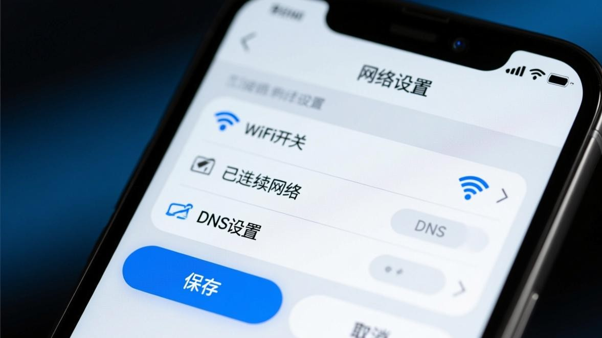
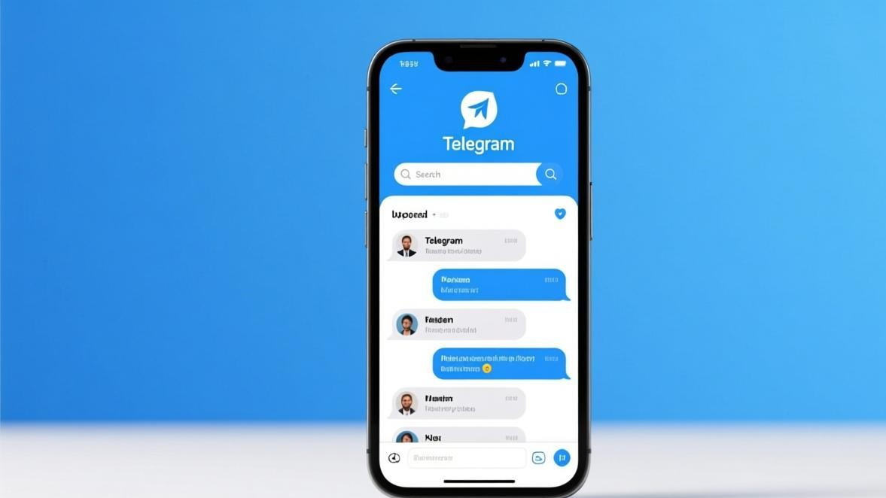

Telegram登录一直转圈怎么处理，手机本地设置排查步骤
打开Telegram输入手机号后，页面就一直转圈，怎么都进不去——这是Telegram用户最头疼的问题之一。很多人以为是账号被封了，实际上大部分情况是你手机的本地设置需要调整。下面从最常见的场景开始，一步步带你排查。

为什么登录会一直转圈？
Telegram登录时需要连接服务器验证手机号。如果手机到Telegram服务器这条链路不通，页面就会一直显示加载中（转圈），但不会弹出具体错误提示。常见原因有四个：
- 网络连接不稳定——WiFi信号弱、移动数据断流、或者当前网络环境限制了对Telegram服务的访问
- DNS解析失败——运营商的默认DNS可能无法正确解析Telegram服务器的域名地址
- 客户端缓存出错——旧版本的登录凭证残留在缓存中，干扰了新的登录请求
- Telegram版本过旧——很久没更新的话，老版本的连接协议可能已经被服务端弃用
分步排查修复（从简单到复杂）
步骤1：切换网络连接
这是最简单、成功率最高的一步。如果你连着WiFi，关掉WiFi改用移动数据；如果你在用移动数据，切换到WiFi。很多时候某个网络通道就是连不上Telegram服务器，换一个通道立刻就好了。
具体操作：关闭WiFi → 打开移动数据 → 重新打开Telegram点击登录。如果移动数据也不行，打开飞行模式等10秒再关掉，让手机重新搜索基站和建立网络连接，然后再试。
步骤2：修改DNS设置
运营商自带的DNS有时会把Telegram的域名解析到错误的IP地址。手动换成公共DNS通常能解决。
安卓手机：设置 → WiFi → 长按当前连接的网络 → 修改网络 → 高级选项 → IP设置选"静态" → DNS1填 8.8.8.8，DNS2填 1.1.1.1 → 保存。
iOS手机：设置 → WiFi → 点击当前网络右边的"i"图标 → 配置DNS → 手动 → 删除原有DNS服务器，添加 8.8.8.8 和 1.1.1.1 → 右上角存储。
如果这两组DNS不行，还可以试试阿里DNS 223.5.5.5 或腾讯DNS 119.29.29.29。
步骤3：清除Telegram缓存
缓存里可能残留了过期的登录凭证数据，导致新的登录请求被卡住。
安卓手机：设置 → 应用管理 → Telegram → 存储 → 清除缓存。注意：是"清除缓存"不是"清除数据"，清除数据会把聊天记录全部删掉。
iOS手机：在Telegram内操作：设置 → 数据和存储 → 存储用量 → 清除整个缓存。

步骤4：更新或重装Telegram
如果前面几步都试过了还是转圈，很可能是Telegram版本太旧。去应用商店更新到最新版，或者卸载后重新安装。
重要提示：卸载前确认聊天记录已经开启了云同步（Telegram默认开启，去设置→聊天设置里可以确认）。只要云同步开着，重装后登录同一个账号，聊天记录会自动恢复。
步骤5：用其他设备登录测试
如果手机端一直转圈，试试在电脑上（Windows/Mac客户端或网页版web.telegram.org）登录同一个账号。如果电脑端能正常登录，说明问题出在手机端的网络或设置上；如果电脑端也转圈，那就不是设备问题，可能需要联系Telegram官方支持。
注意事项
- 不要反复点击登录按钮，频繁请求可能触发FLOOD_WAIT限制（登录被暂时锁定）
- 清除缓存前一定确认聊天记录有云同步，避免重要消息丢失
- 修改DNS后如果其他App上网速度变慢，把DNS改回"自动获取"就行
- 重装后首次登录建议直接用手机号+短信验证码方式
常见问题
Q：转圈多久算不正常？
正常登录验证在5到10秒内完成。如果超过30秒还在转圈，基本可以确定是连接出了问题，按上面步骤排查。
Q：能上网但Telegram就是转圈？
能浏览网页不等于能连上Telegram。部分网络环境（比如公司WiFi、校园网）会限制特定服务。切换到移动数据是最快的验证方法。
Q：改了DNS还是转圈怎么办？
尝试切换网络类型（WiFi换4G/5G），或者等几分钟再试。服务器偶尔也会有波动，不一定是你这边的问题。